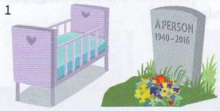
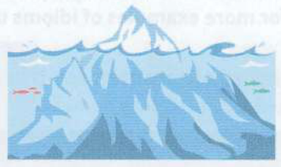
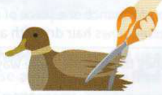
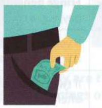

Exercises
5.1
Which idioms do these pictures make you think of?
1

3

2

4

5.2
Are the idioms in these sentences used correctly? If not, correct them.
1
My sister is always buying up-to-minute gadgets.
2
I'm sick and tired of listening to him complaining all the time.
3
My grandad's always talking about good old days.
4
They've been engaged for six months but haven't made any plans about when they're going to tie the knots.
5
Magda was at a loss for words when her son told her he had quit his new job.
6
Engineering isn't the kind of job that every Tom, Dick or Henry could do.
5.3
Complete each idiom.
1
Don't make such a .................................................... out of a molehill.
2
Everyone uses mobile phones now, so the days of the landline are .....................................................
3
My son's got a real .................................................... of adventure. He's going travelling around the world for a year.
4
We won free train tickets to Paris in the competition, but we had to pay for the hotel out of our own .....................................................
5
Freddie keeps shouting at everyone today. I don't know why he's behaving like a .................................................... with a sore head.
5.4
Here are some errors made with idioms by candidates in advanced-level exams. Can you correct them? Looking up the word in brackets in a good idioms dictionary should help you find the correct idiom.
1
You'll pass your driving test if you really want to - where there's a will, there's a power. [WILL]
2
I get bored if I always do the same things at the weekend - change is a spice of life. [VARIETY]
3
Sh! Be quiet! There's no need to talk at the top of your head. [TOP]
4
He never saves any money. He spends whatever he has. Easy coming easy going is his motto. [EASY]
5
I was so upset when I failed the exam. I wept my eyes out of my head. [CRY]
6
She's a total optimist - she always manages to look the good part. [LOOK]